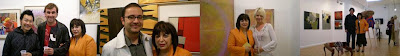
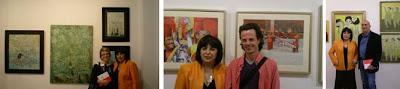

Exposición del 09-05-2008 al 09-06-2008
viernes, 9 de mayo de 2008

La Galería O+O tiene el placer de presentar la exposición colectiva compuesta por las obras de siete artistas: Frances Clarke, Isabel Cosín, Vladimir Skieski, Sanzsoto, Daniel García, Alejandro Vega y Bodhin Philip Woodmard. Una muestra colectiva que se introduce dentro del mundo interior de siete artistas, donde sentimientos, anhelos, miedos e ilusiones se dibujan, pintan y esculpen. Durante un mes, del 9 de mayo al 9 de junio, se podrá visitar una exposición en la que las obras nos hablan de la convivencia del hombre y la naturaleza con las esculturas de Alejandro Vega como protagonistas, de la diversidad cultural dentro de la vida y obra de Vladimir Skieski, de recursos extrapictóricos y reciclaje en las pinturas de Isabel Cosín, de los sueños y la realidad vista a través de los óleos de Frances Clarke, de la esencia de la realidad en los trabajos de abstracción de Sanzsoto, del ritmo y la armonía en las composiciones de Daniel García y de cómo las fotografías de Bodhin Philip Woodmard nos remiten a la espiritualidad y meditación de la India.
{kind=link}

{kind=link}

La artista nacida en Inglaterra Frances Clarke durante un periodo de diez años ha estado viajando por el norte y sur de Europa, Australia y Nuevo México investigando sobre la simbología y su proceso creativo. Su pintura está influenciada por todo su bagaje cultural, que dota a sus creaciones de una gran sutilidad, un aire espiritual y un distintivo simbólico. Colores cálidos -amarillos, ocres, anaranjados- que desdibujan los contornos y parecen desvanecerse toman el protagonismo mientras se difuminan creando un ejercicio lleno de claridad e intensidad. Un trabajo creativo de abstracción delicada y cautivadora que parece hipnotizar con su luz al espectador transportándolo a un mundo de ensoñación.
Isabel Cosín, iniciada en la técnica Tiffany, donde predomina el uso del color y materiales como el pan de oro y el pan de cobre, elabora trabajos íntimamente inspirados en la naturaleza que muestran un mundo diferente y atrayente de vivos colores y brillos metálicos. Paisajes esquemáticos de líneas sinuosas en los que no existe tiempo ni espacio y donde la perspectiva desaparece en pro de la intensificación del primer plano. También encontramos un gusto delicado por el collages en la producción artística de Isabel Cosín, fragmentos de periódicos y revistas se entremezclan con una leve carga pictórica, que cubiertos con una ligera capa de color pasan a formar parte de un trabajo armónico y etéreo.
El trabajo del artista británico Vladimir Ksieski está marcado por el impacto que le causó la luz, el cromatismo y las escenas costumbristas de España. En su trabajo vemos una clara influencia de grandes artista españoles: Solana, Zuloaga, Repollos, Goya y Picasso en su periodo azul. Sus paisajes y fiestas se envuelven de una atmósfera inquietante, donde una multitud de impactantes personajes nos miran tras su careta de carnaval. La fuerza y vitalidad de sus creaciones se basa en el bello contraste visual con el que Vladimir nos presenta el espíritu y la luz mediterránea. Juegos de rojos, negros, azules, tierras y tostados construyen escenas que no revindican tiempo ni lugar. Una obra bañada por la originalidad y la ambigua combinación de la felicidad y la tristeza.
La pintora catalana Sanzsoto, Carmen Sanz Soto, realiza una potente pintura que refleja los influjos del expresionismo y la abstracción, manchas de colores organizados de forma vagamente geométrica que constituyen la expresión de la subjetividad y del mundo interior del artista. Podemos apreciar como debajo de trazos y salpicaduras de intensos colores, existe una combinación de espacios debidamente ordenados, al igual que un cromatismo sensible de tonos y contrastes suaves que desarrollan una obra armónica. Transmite directamente desde el sentimiento, con un mensaje cifrado donde se mezclan colores ágiles y fluidos con una cuidada estructuración.
Daniel García Moragues, licenciado en Historia del Arte y Bellas Artes, nos presenta una obra que se define por el ritmo de sus composiciones. Son pocos los elementos que Daniel García presenta en sus cuadros, formas que se relacionan y entremezclan entre sí mediante líneas, colores o superposiciones, logrando una composición armónica a base de un lenguaje de líneas rectas y figuras geométricas, en unos casos, y en otros, de líneas ondulantes que forman una especie de materia orgánica. Su producción artística sigue dos caminos diferentes, que se contraponen y complementan a la vez, obras de marcada volumetría y contraste donde predominan los negros y grises sobre fondo blanco, frente a coloridas creaciones planas y uniformes.
En la producción artística de este escultor bilbaíno, Alejandro Vega, existe una combinación entre el trabajo del artesano, carpintero y armador y la mano del artista. El proceso de elaboración se compone de tres fases, en primer lugar la idea que surge de recuerdos, hechos o cosas que le inquietan, pasa a forma bidimensional para su estructuración mental, después estos dibujos pasan a convertirse en maquetas susceptibles de ser revisadas y cambiadas, que, por último, mudan al material definitivo. El tema fetiche en sus obras son las mesas, que unas veces son descompuestas hasta desnaturalizarlas y en otras son reconocibles pero con elementos adicionales que transforman su significado y sentido. En su obra plástica siempre vemos latente la ecología, sus esculturas realizadas principalmente en madera se presentan respetuosas con el medio ambiente.
La vida y obra del artista nacido en el norte de Inglaterra, Bodhin Philip Woodmard (1958, Yorkshire), se mueve dentro de la meditación y el recogimiento budista, influenciado por sus viajes al Tíbet y a China. En esta ocasión nos trae una serie de fotografías realizadas en Ladak, el norte de la India. Sus instantáneas nos hacen viajar a un mundo místico lleno de exotismo de paisajes y escenas donde se respira meditación y libertad espiritual. La observación tranquila y atenta de Bodhin nos muestra las ceremonias y los trajes de intensos colores típicos del budismo. Destacando por encima de todo el color rojo rubí de los ropajes de los jóvenes monjes budistas y de las esculturales puertas de sus templos.